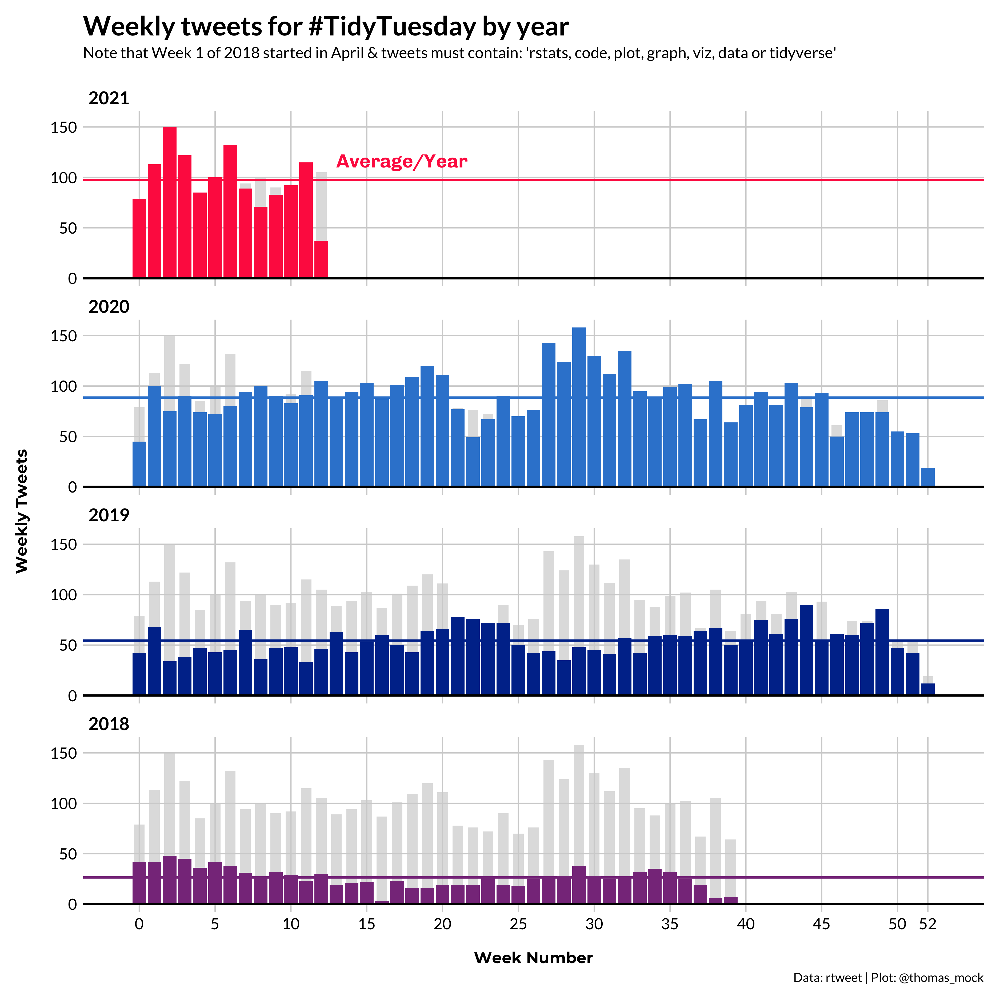

write_alt_text <- function(
chart_type,
type_of_data,
reason,
source
){
glue::glue(
"{chart_type} of {type_of_data} where {reason}. \n\nData source from {source}"
)
}The #TidyTuesday project has been active since April 1st of 2018, so today is the 3 year anniversary!
As this project was borne out of the R4DS Online Learning Community and the R for Data Science textbook, an emphasis was placed on understanding how to summarize and arrange data to make meaningful charts with
ggplot2,tidyr,dplyr, and other tools in thetidyverseecosystem. However, any code-based methodology is welcome - just please remember to share the code used to generate the results.
There was even a paper published on TidyTuesday!
Over the past 3 years, 1000s of people have contributed their submissions and “shown their work” with open source R code! Since the primary way people engage with TidyTuesday is via Twitter submissions, I have a weekly tweet collector that stores and uploads the Tweets to the TidyTuesday GitHub.
This allows us to do some basic counting of a few different parameters over time. However, before we get to the details I also want to get into a mistake we’ve made and have partially rectified. Thanks to efforts by Dr. Liz Hare and Dr. Silvia Canelon, I was made aware that less than 3% of submissions include alternative text (alt text) describing the graphic. This includes basically ALL of my own tweets.
Ha! This is an excerpt from our abstract:
— Silvia Canelón (@spcanelon) March 26, 2021
Our preliminary analysis found that only 2.4% of the images contained a text description entered by the tweet author compared to 84% which were described by default as "Image" 😬
Full abstract available at https://t.co/nqn9VFgWkK
I recommend listening to their talk at CSV conf 2021 on May 5th at 10:20am EST for the full details, and some advice on how to improve our accessibility.
If you’re not aware, alt text is the primary way that screen reader software used by low vision or blind users interact with many web pages or other software. Per the American Foundation for the Blind:
Screen readers are software programs that allow blind or visually impaired users to read the text that is displayed on the computer screen with a speech synthesizer or braille display.
Per the National Federation of the Blind, there were ~ 8 million US-based individuals with visual disability as of 2016. While this is less prevalent than color blindness, it doesn’t capture the whole story. Low vision, altered vision, or motor impairment as opposed to clinically-defined blindness is even more prevalent. I think that the thread by Frank Elavsky covers more details that are worth reading, and emphasizing that inclusivity doesn’t stop at color blind safe palettes.
Resources we could use more of (1/?):
— Frank ⌁ (@FrankElavsky) January 18, 2021
Low vision (~30% of all people):
- High contrast text
- High contrast elements
- Using texture, shape, units
- Designing with zoom/magnification
- Using Hierarchy and Focus
- Using annotations or guides
Ultimately, there is a need to move beyond simply thinking about color-blindness, and making sure to include things like alt text, emphasizing contrast, and generally make our data visualization more engaging for all the potential consumers. I’ve not done a great job of this in the past, but am on a journey to “do better”.
Alt text for graphs
The Data Visualization Society has a great article by Amy Cesal on Writing Alt Text for Data Visualization.
You probably can’t write text that conveys the entire meaning of a chart. But, that doesn’t mean that you shouldn’t try.
Ultimately, this is a hard problem, but just as Amy says - that doesn’t mean we can’t or shouldn’t try to do our best to describe our graphs for folks who aren’t able to see all the details.
She recommends alt text that includes:
- Chart type
- The type of data
- Reason for including the chart
- Link to the data source
The goal here is to add a rich description of the PURPOSE of the graph, which is ultimately the goal of data visualization - telling a story with data.
I have a brief script using glue that allows you to write this style of alt text.
write_alt_text(
"Bar Chart",
"tweets from the past week tagged with the TidyTuesday hashtag",
"Tuesday is the most popular day to post tweets, although about 20-30 tweets are posted every day",
"the {rtweet} package."
)Bar Chart of tweets from the past week tagged with the TidyTuesday hashtag where Tuesday is the most popular day to post tweets, although about 20-30 tweets are posted every day.
Data source from the {rtweet} package.This can be easily added to Twitter-based images via the various clients, and will also be able to be uploaded via rtweet in the future. Twitter has a full guide on how to add image alt text.
When you Tweet photos using the Twitter app for iOS or Android, or on twitter.com, you have the option to compose a description of the images so the content is accessible to more people, including those who are blind or low-vision.
Good image descriptions are concise and descriptive, helping people understand what’s happening in an image.
Without alt text, most images on Twitter will just default to reporting “Image” as the alt text for any images you display. You could imagine that while a picture is worth a 1000 words, that the word “image” is far from helpful in describing said image.
Furthermore, Penn State has a chart description guide that covers charts and accessibility.
Generally speaking an ALT tag cannot do justice to a complex chart. One way to describe a chart is to provide both a text summary and a properly coded data table near the chart.
This serves multiple audiences because a chart can show trends, but a table can provide exact data for those who are interested.
I love this idea of providing the raw data in a table or a source in addition to the image itself. However, I think that also making sure to write a good text description is better than just sharing the data or table alone.
Lastly, to help you remember to always include alt text for images and gifs on Twitter, you can add extensions like Chrome’s Twitter Required Alt Text. This actually prevents you from uploading images WITHOUT alt text.
Future effort
While I’ve made some changes to my personal workflow and including alt text in my “automated” tweets around #TidyTuesday, I hope that we as the R community and more specifically the #TidyTuesday community can make it a priority to add more alt text to our graphs and be more inclusive of the wider community.
While I am excited about the work we have done in the past, we obviously have a lot to do in the future to make this a reality. As part of this, I’m going to be walking through some of the past submission data and writing out example alt text, as well as including tables.
For RMarkdown docs/blogs, you can add alt text very easily!
First off, the basic syntax provides an area for alt text, detailed in the RMarkdown Cookbook.
OR with knitr::include_graphics(), which is what I’ve done for the images below.
{r, fig.cap="alt text"}
knitr::include_graphics('figures/my_image.png')
#TidyTuesday data
With this in mind, we can walk through the past TidyTuesday posts, create some graphics that show the changes, write some alt text that describes said graphs, and include tables to further “tell our story”. All of the historical data/tweets are collected in the TidyTuesday repo.
There are MANY tweets!
And there are still many tweets if we filter to only include Tweets with a few key words of interest to R/Data visualization.
raw_df %>%
filter(str_detect(tolower(text), "rstats|code|plot|graph|viz|data|tidyverse")) %>%
distinct(status_id) %>%
count()# A tibble: 1 × 1
n
<int>
1 13076Lastly, there are thousands of unique contributors over the past 3 years.
Data visualizations
We can create some graphics based on this data. I’m going to create some summary datasets, and then get the top weeks for labeling.
sum_df <- raw_df %>%
filter(str_detect(tolower(text), "rstats|code|plot|graph|viz|data|tidyverse")) %>%
mutate(
created_date = lubridate::as_date(created_at),
year = year(created_date),
week = week(created_date)
) %>%
filter(year %in% 2018:2021) %>%
count(year, week) %>%
group_by(year) %>%
mutate(
roll_n = cumsum(n),
week = if_else(year > 2018, week - 1, week - 14),
year = factor(year, levels = c(2021, 2020, 2019, 2018)),
colour = case_when(
year == 2021 ~ "#FF2B4F",
year == 2020 ~ "#3686d3",
year == 2019 ~ "#003399",
year == 2018 ~ "#88398a",
TRUE ~ "gray80"
)
) %>%
ungroup()
top_weeks <- sum_df %>%
group_by(year) %>%
arrange(desc(roll_n)) %>%
mutate(mean = mean(n)) %>%
slice(1) %>%
ungroup()Growth chart by year
The plotting code is below, and the included alt text:
A line chart of TidyTuesday-tagged tweets across the past 3 years, where there is large year over year growth. 2021 is on pace to exceed the total tweet counts from 2020.
tt_plot <- ggplot(
sum_df,
aes(
x = week,
y = roll_n,
color = colour,
group = year
)
) +
geom_step(size = 1) +
geom_point(
data = top_weeks,
aes(col = colour),
size = 2.5,
stroke = 1
) +
geom_text(
data = top_weeks,
aes(label = year),
size = 8,
hjust = c(1, 1, 1, 0),
nudge_y = 50,
vjust = 0
) +
geom_hline(yintercept = 0, size = 1, color = "black") +
scale_y_continuous(
breaks = seq(0, 5500, by = 500),
limits = c(0, 5500)
) +
scale_x_continuous(
breaks = c(seq(0, 50, 5), 52),
limits = c(0, 53)
) +
scale_color_identity(aesthetics = c("colour", "fill")) +
labs(
x = "\nWeek Number",
y = "Cumulative Tweets\n",
caption = "Data: rtweet | Plot: @thomas_mock",
title = "Cumulative tweets for #TidyTuesday by year",
subtitle = "Note that Week 1 of 2018 started in April & tweets must contain: 'rstats, code, plot, graph, viz, data or tidyverse'\n"
) +
tomtom::theme_538() +
theme(
legend.position = c(0.1, 0.8),
legend.background = element_blank(),
legend.title = element_blank(),
legend.text = element_text(size = 12),
plot.background = element_blank(),
plot.title = element_text(size = 24)
)
ggsave(
"tt_tweets.png",
tt_plot,
device = ragg::agg_png(
width = 10,
height = 10,
units = "in",
scaling = 0.8,
res = 500
)
)Saving 12.5 x 12.5 in imageknitr::include_graphics("tt_tweets.png")
Data sourced from the TidyTuesday repo.
library(gt)
top_weeks %>%
select(year:roll_n, mean) %>%
gt() %>%
fmt_number(columns = vars(roll_n, mean), decimals = 0) %>%
cols_label(
week = html("Week<br>Number"),
n = html("Tweets in<br>last week"),
roll_n = html("Rolling<br>Tweet Count"),
) %>%
tab_header(
title = md("**Summary of TidyTuesday Tweets by year**"),
) %>%
espnscrapeR::gt_theme_538() %>%
tab_source_note(
html("<strong>Data Source: </strong><a href='https://github.com/rfordatascience/tidytuesday/blob/master/tidytuesday_tweets/data.csv'>TidyTuesday Repo</a>")
)Warning: `columns = vars(...)` has been deprecated in gt 0.3.0:
* please use `columns = c(...)` instead
Warning: `columns = vars(...)` has been deprecated in gt 0.3.0:
* please use `columns = c(...)` instead| Summary of TidyTuesday Tweets by year | ||||
|---|---|---|---|---|
| year | Week Number |
Tweets in last week |
Rolling Tweet Count |
mean |
| 2021 | 52 | 2 | 4,353 | 82 |
| 2020 | 52 | 19 | 4,694 | 89 |
| 2019 | 52 | 12 | 2,887 | 54 |
| 2018 | 39 | 7 | 1,059 | 26 |
| Data Source: TidyTuesday Repo | ||||
Peak weeks by year
The next graphic is intended to show the peak number of tweets recorded for each week, separated out by year. The alt text is included below the graphc, but also described as so:
A bar chart of TidyTuesday-tagged tweets across the past 3 years, split into small multiples by year, where each year shows higher weekly peaks over the same week as last year. 2021 is on pace to have the highest number of tweets for most weeks.
col_label_yr <- tibble(
week = 13,
n = 110,
text = "Average/Year",
colour = "#FF2B4F",
year = factor(2021)
)
tt_col <- sum_df %>%
group_by(week) %>%
mutate(max = max(n), year = factor(year)) %>%
ungroup() %>%
ggplot(
aes(
x = week,
y = n,
fill = colour,
group = year
),
color = "white",
) +
geom_col(aes(x = week, y = max), fill = "lightgrey", color = "transparent", alpha = 0.7, width = 0.7) +
geom_col() +
geom_text(
data = col_label_yr, hjust = 0, vjust = 0, size = 6,
fontface = "bold", family = "Chivo",
aes(label = text, x = week, y = n, color = colour)
) +
facet_wrap(~year, ncol = 1) +
geom_hline(yintercept = 0, size = 1, color = "black") +
geom_hline(
data = group_by(sum_df, year) %>% summarise(mean = mean(n)),
aes(yintercept = mean),
color = c("#FF2B4F", "#3686d3", "#003399", "#88398a"),
size = 1
) +
scale_x_continuous(
breaks = c(seq(0, 50, 5), 52),
limits = c(-1, 53)
) +
scale_color_identity(aesthetics = c("colour", "fill")) +
tomtom::theme_538() +
theme(
legend.position = c(0.1, 0.8),
legend.background = element_blank(),
strip.background = element_rect(fill = "white", color = "white"),
strip.text = element_text(color = "black", face = "bold", size = 16, hjust = 0),
legend.title = element_blank(),
legend.text = element_text(size = 12),
plot.background = element_blank(),
plot.title = element_text(size = 24)
) +
labs(
x = "\nWeek Number",
y = "Weekly Tweets\n",
caption = "Data: rtweet | Plot: @thomas_mock",
title = "Weekly tweets for #TidyTuesday by year",
subtitle = "Note that Week 1 of 2018 started in April & tweets must contain: 'rstats, code, plot, graph, viz, data or tidyverse'\n"
)
ggsave(
"tt_columns.png",
plot = tt_col,
device = ragg::agg_png(
width = 10,
height = 10,
units = "in",
scaling = 0.8,
res = 500
)
)Saving 12.5 x 12.5 in imageknitr::include_graphics("tt_columns.png")
Data sourced from the TidyTuesday repo.
Below is a corresponding table telling part of the same story, namely that 2021 has many of the highest weekly tweet counts seen over the past 3 years.
sum_df %>%
filter(week <= 12) %>%
group_by(week) %>%
filter(n == max(n)) %>%
ungroup() %>%
arrange(week) %>%
select(year:roll_n) %>%
gt() %>%
tab_style(
style = cell_text(color = "#FF2B4F", weight = "bold"),
locations = cells_body(vars(year), rows = year == 2021)
) %>%
tab_style(
style = cell_text(color = "#3686d3", weight = "bold"),
locations = cells_body(vars(year), rows = year == 2020)
) %>%
fmt_number(columns = vars(roll_n), decimals = 0) %>%
cols_label(
week = html("Week<br>Number"),
n = html("Weekly<br>Tweets"),
roll_n = html("Rolling<br>Total Tweets"),
) %>%
tab_header(
title = md("**Peak number of tweets by week**"),
subtitle = "2021 has most of the top counts for each week"
) %>%
espnscrapeR::gt_theme_538() %>%
tab_source_note(
html("<strong>Data Source: </strong><a href='https://github.com/rfordatascience/tidytuesday/blob/master/tidytuesday_tweets/data.csv'>TidyTuesday Repo</a>")
)Warning: `columns = vars(...)` has been deprecated in gt 0.3.0:
* please use `columns = c(...)` instead
Warning: `columns = vars(...)` has been deprecated in gt 0.3.0:
* please use `columns = c(...)` instead
Warning: `columns = vars(...)` has been deprecated in gt 0.3.0:
* please use `columns = c(...)` instead
Warning: `columns = vars(...)` has been deprecated in gt 0.3.0:
* please use `columns = c(...)` instead| Peak number of tweets by week | |||
|---|---|---|---|
| 2021 has most of the top counts for each week | |||
| year | Week Number |
Weekly Tweets |
Rolling Total Tweets |
| 2021 | 0 | 79 | 79 |
| 2021 | 1 | 113 | 192 |
| 2021 | 2 | 150 | 342 |
| 2021 | 3 | 122 | 464 |
| 2021 | 4 | 85 | 549 |
| 2021 | 5 | 100 | 649 |
| 2021 | 6 | 132 | 781 |
| 2020 | 7 | 94 | 630 |
| 2020 | 8 | 100 | 730 |
| 2020 | 9 | 90 | 820 |
| 2021 | 10 | 92 | 1,116 |
| 2021 | 11 | 115 | 1,231 |
| 2021 | 12 | 108 | 1,339 |
| Data Source: TidyTuesday Repo | |||
Peak users
The last chart is the number of unique contributors by year, regardless of whether they contributed in previous years.
user_year_sum <- raw_df %>%
filter(!screen_name %in% c("thomas_mock", "r4dscommunity")) %>%
filter(str_detect(tolower(text), "rstats|code|plot|graph|viz|data|tidyverse")) %>%
mutate(created_date = lubridate::as_date(created_at)) %>%
mutate(
year = year(created_date),
week = week(created_date),
week = if_else(year > 2018, week - 1, week - 14),
year = factor(year, levels = c(2021, 2020, 2019, 2018))
) %>%
filter(year %in% 2018:2021) %>%
count(screen_name, week, year) %>%
mutate(n = 1) %>%
arrange(year, week) %>%
distinct(screen_name, year, .keep_all = TRUE) %>%
group_by(year) %>%
mutate(week_roll_n = cumsum(n)) %>%
mutate(
colour = case_when(
year == 2021 ~ "#FF2B4F",
year == 2020 ~ "#3686d3",
year == 2019 ~ "#003399",
year == 2018 ~ "#88398a",
TRUE ~ "gray80"
)
) %>%
ungroup() %>%
mutate(roll_n = cumsum(n))
top_user_sum <- user_year_sum %>%
group_by(year) %>%
arrange(desc(week_roll_n)) %>%
group_by(year, week) %>%
mutate(sum = sum(n)) %>%
group_by(year) %>%
mutate(mean = mean(sum)) %>%
slice(1) %>%
ungroup()
user_unique_plot <- user_year_sum %>%
ggplot(aes(x = week, y = week_roll_n, color = colour, group = year)) +
geom_step(size = 1) +
geom_point(
data = top_user_sum,
aes(col = colour),
size = 2.5,
stroke = 1
) +
geom_text(
data = top_user_sum,
aes(label = year),
size = 8,
hjust = c(1, 1, 1, 0),
nudge_y = 50,
vjust = 0
) +
geom_hline(yintercept = 0, size = 1, color = "black") +
scale_y_continuous(
breaks = seq(0, 1250, by = 250),
limits = c(0, 1300)
) +
scale_x_continuous(
breaks = c(seq(0, 50, 5), 52),
limits = c(0, 53)
) +
scale_color_identity(aesthetics = c("colour", "fill")) +
labs(
x = "\nWeek Number",
y = "Unique Users\n",
caption = "Data: rtweet | Plot: @thomas_mock",
title = "Cumulative unique contributors for #TidyTuesday by year",
subtitle = "Note that Week 1 of 2018 started in April & tweets must contain: 'rstats, code, plot, graph, viz, data or tidyverse'\n"
) +
tomtom::theme_538() +
theme(
legend.position = c(0.1, 0.8),
legend.background = element_blank(),
legend.title = element_blank(),
legend.text = element_text(size = 12),
plot.background = element_blank(),
plot.title = element_text(size = 24)
)
ggsave(
"tt_users.png",
user_unique_plot,
device = ragg::agg_png(
width = 10,
height = 10,
units = "in",
scaling = 0.8,
res = 500
)
)Saving 12.5 x 12.5 in imageknitr::include_graphics("tt_users.png")
Data sourced from the TidyTuesday repo.
Below is a corresponding table telling part of the same story, namely that 2021 has many of the highest weekly user counts recorded over the past 3 years.
top_user_sum %>%
select(year, week, mean, roll_n = week_roll_n) %>%
gt() %>%
fmt_number(columns = vars(roll_n, mean), decimals = 0) %>%
cols_label(
week = html("Unique<br>Weeks"),
mean = html("Average<br>Weekly Users"),
roll_n = html("Rolling<br>User Count"),
) %>%
tab_header(
title = md("**Summary of TidyTuesday Contributors by year**"),
subtitle = "2021 has the highest unique user per week"
) %>%
espnscrapeR::gt_theme_538() %>%
tab_source_note(
html("<strong>Data Source: </strong><a href='https://github.com/rfordatascience/tidytuesday/blob/master/tidytuesday_tweets/data.csv'>TidyTuesday Repo</a>")
)Warning: `columns = vars(...)` has been deprecated in gt 0.3.0:
* please use `columns = c(...)` instead
Warning: `columns = vars(...)` has been deprecated in gt 0.3.0:
* please use `columns = c(...)` instead| Summary of TidyTuesday Contributors by year | |||
|---|---|---|---|
| 2021 has the highest unique user per week | |||
| year | Unique Weeks |
Average Weekly Users |
Rolling User Count |
| 2021 | 52 | 28 | 1,048 |
| 2020 | 52 | 26 | 1,178 |
| 2019 | 52 | 19 | 825 |
| 2018 | 39 | 11 | 284 |
| Data Source: TidyTuesday Repo | |||
Future
Again, I’m ecstatic about how many contributors and unique tweets there have been to TidyTuesday over the past 3 years, but I hope that we as a community can improve the user experience for potential low vision or blind contributors as well.
I will continue to try and make TidyTuesday as inclusive as possible, and greatly appreciate any ideas, contributions, or suggestions from the wider community.
Expand for Session Info
─ Session info ───────────────────────────────────────────────────────────────
setting value
version R version 4.2.0 (2022-04-22)
os macOS Monterey 12.2.1
system aarch64, darwin20
ui X11
language (EN)
collate en_US.UTF-8
ctype en_US.UTF-8
tz America/Chicago
date 2022-04-28
pandoc 2.18 @ /Applications/RStudio.app/Contents/MacOS/quarto/bin/tools/ (via rmarkdown)
quarto 0.9.294 @ /usr/local/bin/quarto
─ Packages ───────────────────────────────────────────────────────────────────
package * version date (UTC) lib source
dplyr * 1.0.8 2022-02-08 [1] CRAN (R 4.2.0)
forcats * 0.5.1 2021-01-27 [1] CRAN (R 4.2.0)
ggplot2 * 3.3.5 2021-06-25 [1] CRAN (R 4.2.0)
gt * 0.5.0.9000 2022-04-27 [1] Github (rstudio/gt@0d4c83d)
lubridate * 1.8.0 2021-10-07 [1] CRAN (R 4.2.0)
purrr * 0.3.4 2020-04-17 [1] CRAN (R 4.2.0)
readr * 2.1.2 2022-01-30 [1] CRAN (R 4.2.0)
sessioninfo * 1.2.2 2021-12-06 [1] CRAN (R 4.2.0)
stringr * 1.4.0 2019-02-10 [1] CRAN (R 4.2.0)
tibble * 3.1.6 2021-11-07 [1] CRAN (R 4.2.0)
tidyr * 1.2.0 2022-02-01 [1] CRAN (R 4.2.0)
tidyverse * 1.3.1 2021-04-15 [1] CRAN (R 4.2.0)
[1] /Library/Frameworks/R.framework/Versions/4.2-arm64/Resources/library
──────────────────────────────────────────────────────────────────────────────